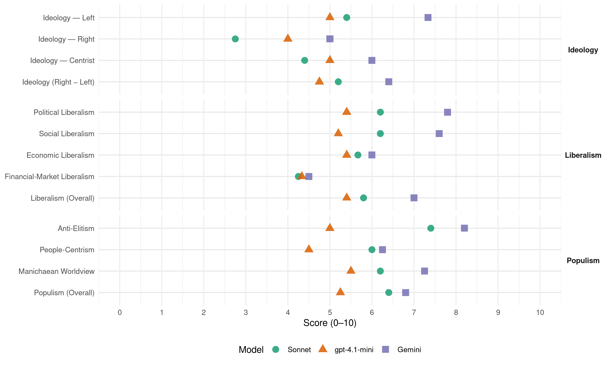

DF (Montenegro, 2012)
manifesto_id 91060_201210
Get full text: This site shows derived annotations and short verbatim quotes only. The full manifesto text is © Manifesto Project / WZB — obtain it via manifesto-project.wzb.eu using the manifesto_id above.
Headline scores
| Dimension | Sonnet | gpt-4.1-mini | Gemini |
|---|---|---|---|
| Populism (Overall) | 6.4 | 5.2 | 6.8 |
| Anti-Elitism | 7.4 | 5.0 | 8.2 |
| People-Centrism | 6.0 | 4.5 | 6.2 |
| Manichaean Worldview | 6.2 | 5.5 | 7.2 |
| Ideology (Right − Left) | 5.2 | 4.8 | 6.4 |
| Liberalism (Overall) | 5.8 | 5.4 | 7.0 |
| Political Liberalism | 6.2 | 5.4 | 7.8 |
| Social Liberalism | 6.2 | 5.2 | 7.6 |
| Economic Liberalism | 5.7 | 5.4 | 6.0 |
| Financial-Market Liberalism | 4.2 | 4.3 | 4.5 |
Evidence per dimension
Economic Liberalism
Gemini · score 3.0 · verified · chunk 1
“dugoročno održiva tržišna ekonomija”
ekonomske reforme, promjena ekonomske ideologije, dugoročno održiva tržišna ekonomija, strukturne promjene, aktivna industrijska
Gemini · score 7.0 · verified · chunk 2
“tranzicije ka tržišnoj privredi i demokratiji”
globalizacije i liberalizacije došlo je do raspada socijalističkih društava i njihovog ulaska u proces tranzicije ka tržišnoj privredi i demokratiji. U nekim od tih društava
Gemini · score 7.0 · verified · chunk 3
“dugoročno održiva tržišna ekonomija, strukturne promjene”
Crnoj Gori su neophodne korjenite ekonomske reforme, promjena ekonomske ideologije, dugoročno održiva tržišna ekonomija, strukturne promjene, aktivna industrijska
Gemini · score 6.0 · verified · chunk 4
“tranzicije ka tržišnoj privredi i demokratiji”
proces tranzicije ka tržišnoj privredi i demokratiji. U nekim od
Gemini · score 7.0 · verified · chunk 5
“podsticaj kvalitetnoj konkurenciji”
Stvoriti uslove za osnivanje privatnih naučnih institucija po visokim standardima kao podsticaj kvalitetnoj konkurenciji.
gpt-4.1-mini · score 7.0 · verified · chunk 1
“Crnoj Gori su neophodne korjenite ekonomske reforme, promjena ekonomske ideologije, dugoročno održiva tržišna ekonomija”
B. EKONOMSKA POLITIKA Crnoj Gori su neophodne korjenite ekonomske reforme, promjena ekonomske ideologije, dugoročno održiva tržišna ekonomija, strukturne promjene, aktivna industrijska politika, otklanjanje ograničenja, preispitivanje loših ugovora, novi sistem regulacije i nadzora, dinamičan privredni rast, uravnotežena javna potrošnja, inovirano punjenje i raspodjela budžeta, stimulativan poslovni ambijent, značajno učešće nauke, rad zasnovan na znanju, inicirano i podržano preduzetništvo, profitabilna nova radna mjesta.
gpt-4.1-mini · score 3.0 · verified · chunk 2
“podsticati sve oblike zapošljavanja, samozapošljavanja i porodičnog preduzetništva”
Podsticati sve oblike zapošljavanja, samozapošljavanja i porodičnog preduzetništva, pridajući posebnu pažnju zapošljavanju mladih i stvaranju novih razvojnih mogućnosti u manjim mjestima i manje razvijenim krajevima, kako bi se poboljšala demografska slika Crne Gore.
gpt-4.1-mini · score 6.0 · verified · chunk 3
“dinamičan privredni rast, nove investicije, povećavajući likvidnost”
Formirati Razvojnu banku Crne Gore dokapitalizacijom Investiciono- razvojног fonda, kreditnom podrškom pod povoljnim uslovima od strane međunarodnih finansijskih institucija, portfeljom od oko 1 milijarde eura, pokrećući dinamičan privredni rast, nove investicije, povećavajući likvidnost.
gpt-4.1-mini · score 4.0 · verified · chunk 4
“privatizacijom velikih privrednih subjekata zatvoreni su naučno-razvojni centri”
Privatizacijom velikih privrednih subjekata zatvoreni su naučno-razvojni centri koji su funkcionisali u okviru njih. Infrastruktura za bavljenje naučnoistraživačim radom danas je skoro ispod svakog nivoa…
gpt-4.1-mini · score 7.0 · verified · chunk 5
“Stimulisati otvaranje privatnih obrazovnih ustanova douniverzitetskog obrazovanja”
494. Snažno podsticati cjeloživotno učenje, tj. sve oblike neformalnog obrazovanja (dokvalifikacije, prekvalifikacije, vanredno studiranje) u cilju lakšeg i bržeg zapošljavanja i smanjivanja potrebe za uvozom radne snage. 495. Stimulisati otvaranje privatnih obrazovnih ustanova douniverzitetskog obrazovanja posebno osnovnih i srednjih škola. 496. Formirati fond za talente i posebnu pažnju posvetiti nadarenoj djeci kroz kreiranje posebnih, individualnih programa za njih.
Sonnet · score 4.0 · mixed · chunk 1
“dugoročno održiva tržišna ekonomija, strukturne promjene”
Crnoj Gori su neophodne korjenite ekonomske reforme, promjena ekonomske ideologije, dugoročno održiva tržišna ekonomija, strukturne promjene, aktivna industrijska politika
Sonnet · score 6.0 · verified · chunk 2
“poreskim olakšicama privatne investitore”
Stimulisati poreskim olakšicama privatne investitore da ulažu u ove svrhe
Sonnet · score 5.0 · mixed · chunk 3
“dugoročno održiva tržišna ekonomija, strukturne promjene”
Crnoj Gori su neophodne korjenite ekonomske reforme, promjena ekonomske ideologije, dugoročno održiva tržišna ekonomija, strukturne promjene, aktivna industrijska politika
Sonnet · score 5.0 · verified · chunk 4
“tržišnoj privredi i demokratiji”
njihovog ulaska u proces tranzicije ka tržišnoj privredi i demokratiji. U nekim od tih društava
Sonnet · score 6.0 · verified · chunk 5
“Stimulisati otvaranje privatnih obrazovnih ustanova”
Stimulisati otvaranje privatnih obrazovnih ustanova douniverzitetskog obrazovanja posebno osnovnih i srednjih škola
Financial-Market Liberalism
Gemini · score 3.0 · verified · chunk 1
“Formirati Razvojnu banku Crne Gore”
Monetarna politika Mjere: 160.Formirati Razvojnu banku Crne Gore dokapitalizacijom Investiciono- razvojnog fonda
Gemini · score 6.0 · verified · chunk 3
“Ustanoviti državnu Agrobanku”
Registar poljoprivrednih proizvođača. Pojednostaviti administrativne procedure. 76. Ustanoviti državnu Agrobanku. 77. Definisati politiku
gpt-4.1-mini · score 6.0 · verified · chunk 1
“Jačati institucionalni i normativni okvir finansijskog tržišta. Unaprijediti regulatorni okvir i kapacite revizije i supervizije u okviru finansijskog trzišta”
160.Formirati Razvojnu banku Crne Gore dokapitalizacijom Investiciono- razvojnog fonda, kreditnom podrškom pod povoljnim uslovima od strane međunarodnih finansijskih institucija, portfeljom od oko 1 milijarde eura, pokrećući dinamičan privredni rast, nove investicije, povećavajući likvidnost. 161. Usvojiti nacionalni plan za djelovanje u vanrednim okolnostima. 162. Jačati institucionalni i normativni okvir finansijskog tržišta. 163. Unaprijediti regulatorni okvir i kapacite revizije i supervizije u okviru finansijskog trzišta.
gpt-4.1-mini · score 2.0 · verified · chunk 2
“analizu kriminogene scene, infiltracije organizovanog kriminala u legalni ekonomski sektor”
Izvršiti analizu kriminogene scene, infiltracije organizovanog kriminala u legalni ekonomski sektor, špekulacija na tržištu kapitala, pranja novca kroz proces privatizacije, kupovinu nekretnina, igre na sreću i izgradnju građevinskih objekata, vlasništvo of šor firmi, i ispitati učešće visokih državnih funkcionera i policijskih i obaveštajnih struktura u krijumčarenju cigareta, droge i ljudi.
gpt-4.1-mini · score 5.0 · verified · chunk 3
“Unaprijediti regulatorni okvir i kapacite revizije i supervizije u okviru finansijskog trzišta”
Jačati institucionalni i normativni okvir finansijskog tržišta. Unaprijediti regulatorni okvir i kapacite revizije i supervizije u okviru finansijskog trzišta. Izmijeniti Zakon o obligacionim odnosima i Zakon o finansijskom lizingu.
Sonnet · score 5.0 · verified · chunk 1
“Jačati institucionalni i normativni okvir finansijskog tržišta”
Formirati Razvojnu banku Crne Gore dokapitalizacijom Investiciono-razvojnog fonda… Jačati institucionalni i normativni okvir finansijskog tržišta.
Sonnet · score 4.0 · verified · chunk 2
“špekulacija na tržištu kapitala, pranja novca”
infiltracije organizovanog kriminala u legalni ekonomski sektor, špekulacija na tržištu kapitala, pranja novca kroz proces privatizacije
Sonnet · score 5.0 · verified · chunk 3
“Jačati institucionalni i normativni okvir finansijskog tržišta”
Formirati Razvojnu banku Crne Gore dokapitalizacijom Investiciono-razvojnog fonda… Jačati institucionalni i normativni okvir finansijskog tržišta.
Sonnet · score 3.0 · verified · chunk 4
“špekulacija na tržištu kapitala, pranja novca”
infiltracije organizovanog kriminala u legalni ekonomski sektor, špekulacija na tržištu kapitala, pranja novca kroz proces privatizacije
Political Liberalism
Gemini · score 7.0 · verified · chunk 1
“vladavinom prava, kao glavnom pretpostavkom”
demokratskom smjenom režima, suočavanjem sa prošlošću i lustracijom, te vladavinom prava, kao glavnom pretpostavkom, zatim pravom
Gemini · score 8.0 · verified · chunk 2
“vladavina prava kao temelj jednakosti”
Crna Gora je danas zatočena država. U njoj ne postoji vladavina prava kao temelj jednakosti i nediskriminacije, i stvaranja pravne sigurnosti
Gemini · score 8.0 · verified · chunk 3
“demokratskom smjenom režima, suočavanjem sa prošlošću”
PUNA EMANCIPACIJA CRNE GORE može se ostvariti samo demokratskom smjenom režima, suočavanjem sa prošlošću i lustracijom
Gemini · score 8.0 · verified · chunk 4
“vrijednostima pluralističke demokratije i ljudskih prava”
zasnovanoj na univerzalnim vrijednostima pluralističke demokratije i ljudskih prava koja će težiti
Gemini · score 8.0 · verified · chunk 5
“autonoman i nezavisan od političkih uticaja”
Učiniti da Savjet za visoko obrazovanje bude autonoman i nezavisan od političkih uticaja.
gpt-4.1-mini · score 7.0 · verified · chunk 1
“institucije su zarobljene i određene interesima režima”
Puna istina je da je Crna Gora samo u formalnom i deklarativnom smislu parlamentarno društvo, a faktički i suštinski pretpolitičko. Institucije su zarobljene i određene interesima režima.
gpt-4.1-mini · score 3.0 · verified · chunk 2
“vladavini prava, u kojoj je obezbijeđeno ostvarivanje i zaštita ljudskih prava”
Izgradnja Crne Gore kao demokratske, građanske, ekološke, prosperitetne i integrisane države, zasnovane na vladavini prava, u kojoj je obezbijeđeno ostvarivanje i zaštita ljudskih prava, socijalna sigurnost, nezavisnost institucija, ravnomjeran i dinamičan razvoj, efikasan i kvalitetan rad pravosudnih organa, države koja bi bila i racionalna i efikasna, danas je deklarativni, a ne suštinski cilj.
gpt-4.1-mini · score 5.0 · verified · chunk 3
“institucije su zarobljene i određene interesima režima”
Puna istina je da je Crna Gora samo u formalnom i deklarativnom smislu parlamentarno društvo, a faktički i suštinski pretpolitičko. Institucije su zarobljene i određene interesima režima. Mnogi kritičari režima su proganjani, a neki čak i ubijeni.
gpt-4.1-mini · score 6.0 · verified · chunk 4
“vladavini prava, u kojoj je obezbijeđeno ostvarivanje i zaštita ljudskih prava”
Izgradnja Crne Gore kao demokratske, građanske, ekološke, prosperitetne i integrisane države, zasnovane na vladavini prava, u kojoj je obezbijeđeno ostvarivanje i zaštita ljudskih prava…
gpt-4.1-mini · score 6.0 · verified · chunk 5
“Učiniti da Savjet za visoko obrazovanje bude autonoman i nezavisan od političkih uticaja”
499. Napraviti detaljnu analizu stvarnih potreba Crne Gore za određenim obrazovnim profilima i na osnovu toga utvrđivati broj studenata finansiranih iz budžeta na pojedinim studijskim programima i opravdanost postojanja pojedinih studijskih programa. 500. Učiniti da Savjet za visoko obrazovanje bude autonoman i nezavisan od političkih uticaja. 501. Izvršiti reakreditaciju studijskih programa od strane neke nezavisne međunarodno akreditovane agencije za tu djelatnost.
Sonnet · score 5.0 · verified · chunk 1
“vladavinom prava, kao glavnom pretpostavkom”
PUNA EMANCIPACIJA CRNE GORE može se ostvariti samo demokratskom smjenom režima, suočavanjem sa prošlošću i lustracijom, te vladavinom prava, kao glavnom pretpostavkom
Sonnet · score 7.0 · verified · chunk 2
“vladavini prava, u kojoj je obezbijeđeno ostvarivanje”
zasnovane na vladavini prava, u kojoj je obezbijeđeno ostvarivanje i zaštita ljudskih prava, socijalna sigurnost, nezavisnost institucija
Sonnet · score 6.0 · verified · chunk 3
“vladavinom prava, kao glavnom pretpostavkom”
PUNA EMANCIPACIJA CRNE GORE može se ostvariti samo demokratskom smjenom režima, suočavanjem sa prošlošću i lustracijom, te vladavinom prava, kao glavnom pretpostavkom
Sonnet · score 7.0 · verified · chunk 4
“vladavini prava, u kojoj je obezbijeđeno ostvarivanje”
zasnovane na vladavini prava, u kojoj je obezbijeđeno ostvarivanje i zaštita ljudskih prava, socijalna sigurnost, nezavisnost institucija
Sonnet · score 6.0 · verified · chunk 5
“autonoman i nezavisan od političkih uticaja”
Učiniti da Savjet za visoko obrazovanje bude autonoman i nezavisan od političkih uticaja
Liberalism (Overall)
Gemini · score 5.0 · verified · chunk 1
“vladavinom prava, kao glavnom pretpostavkom”
demokratskom smjenom režima, suočavanjem sa prošlošću i lustracijom, te vladavinom prava, kao glavnom pretpostavkom, zatim pravom
Gemini · score 8.0 · verified · chunk 2
“vladavina prava kao temelj jednakosti”
Crna Gora je danas zatočena država. U njoj ne postoji vladavina prava kao temelj jednakosti i nediskriminacije, i stvaranja pravne sigurnosti
Gemini · score 7.0 · verified · chunk 3
“dugoročno održiva tržišna ekonomija, strukturne promjene”
Crnoj Gori su neophodne korjenite ekonomske reforme, promjena ekonomske ideologije, dugoročno održiva tržišna ekonomija, strukturne promjene, aktivna industrijska
Gemini · score 7.0 · verified · chunk 4
“vrijednostima pluralističke demokratije i ljudskih prava”
zasnovanoj na univerzalnim vrijednostima pluralističke demokratije i ljudskih prava koja će težiti
Gemini · score 8.0 · verified · chunk 5
“podsticaj kvalitetnoj konkurenciji”
Stvoriti uslove za osnivanje privatnih naučnih institucija po visokim standardima kao podsticaj kvalitetnoj konkurenciji.
gpt-4.1-mini · score 7.0 · verified · chunk 1
“Crnoj Gori su neophodne korjenite ekonomske reforme, promjena ekonomske ideologije, dugoročno održiva tržišna ekonomija”
B. EKONOMSKA POLITIKA Crnoj Gori su neophodne korjenite ekonomske reforme, promjena ekonomske ideologije, dugoročno održiva tržišna ekonomija, strukturne promjene, aktivna industrijska politika, otklanjanje ograničenja, preispitivanje loših ugovora, novi sistem regulacije i nadzora, dinamičan privredni rast, uravnotežena javna potrošnja, inovirano punjenje i raspodjela budžeta, stimulativan poslovni ambijent, značajno učešće nauke, rad zasnovan na znanju, inicirano i podržano preduzetništvo, profitabilna nova radna mjesta.
gpt-4.1-mini · score 3.0 · verified · chunk 2
“Izgradnja Crne Gore kao demokratske, građanske, ekološke, prosperitetne i integrisane države”
Izgradnja Crne Gore kao demokratske, građanske, ekološke, prosperitetne i integrisane države, zasnovane na vladavini prava, u kojoj je obezbijeđeno ostvarivanje i zaštita ljudskih prava, socijalna sigurnost, nezavisnost institucija, ravnomjeran i dinamičan razvoj, efikasan i kvalitetan rad pravosudnih organa, države koja bi bila i racionalna i efikasna, danas je deklarativni, a ne suštinski cilj.
gpt-4.1-mini · score 5.0 · verified · chunk 3
“Jačati institucionalni i normativni okvir finansijskog tržišta”
Jačati institucionalni i normativni okvir finansijskog tržišta. Unaprijediti regulatorni okvir i kapacite revizije i supervizije u okviru finansijskog trzišta. Izmijeniti Zakon o obligacionim odnosima i Zakon o finansijskom lizingu.
gpt-4.1-mini · score 5.0 · verified · chunk 4
“Izgradnja Crne Gore kao demokratske, građanske, ekološke, prosperitetne i integrisane države”
Izgradnja Crne Gore kao demokratske, građanske, ekološke, prosperitetne i integrisane države, zasnovane na vladavini prava, u kojoj je obezbijeđeno ostvarivanje i zaštita ljudskih prava…
gpt-4.1-mini · score 7.0 · verified · chunk 5
“Učiniti da Savjet za visoko obrazovanje bude autonoman i nezavisan od političkih uticaja”
499. Napraviti detaljnu analizu stvarnih potreba Crne Gore za određenim obrazovnim profilima i na osnovu toga utvrđivati broj studenata finansiranih iz budžeta na pojedinim studijskim programima i opravdanost postojanja pojedinih studijskih programa. 500. Učiniti da Savjet za visoko obrazovanje bude autonoman i nezavisan od političkih uticaja. 501. Izvršiti reakreditaciju studijskih programa od strane neke nezavisne međunarodno akreditovane agencije za tu djelatnost.
Sonnet · score 5.0 · verified · chunk 1
“vladavinom prava, kao glavnom pretpostavkom”
PUNA EMANCIPACIJA CRNE GORE može se ostvariti samo demokratskom smjenom režima, suočavanjem sa prošlošću i lustracijom, te vladavinom prava, kao glavnom pretpostavkom
Sonnet · score 6.0 · verified · chunk 2
“demokratske, građanske, ekološke, prosperitetne i integrisane države”
Izgradnja Crne Gore kao demokratske, građanske, ekološke, prosperitetne i integrisane države, zasnovane na vladavini prava
Sonnet · score 6.0 · verified · chunk 3
“vladavinom prava, kao glavnom pretpostavkom”
PUNA EMANCIPACIJA CRNE GORE može se ostvariti samo demokratskom smjenom režima, suočavanjem sa prošlošću i lustracijom, te vladavinom prava, kao glavnom pretpostavkom
Sonnet · score 6.0 · verified · chunk 4
“vladavini prava, u kojoj je obezbijeđeno ostvarivanje”
zasnovane na vladavini prava, u kojoj je obezbijeđeno ostvarivanje i zaštita ljudskih prava, socijalna sigurnost, nezavisnost institucija
Sonnet · score 6.0 · verified · chunk 5
“Stimulisati otvaranje privatnih obrazovnih ustanova”
Stimulisati otvaranje privatnih obrazovnih ustanova douniverzitetskog obrazovanja posebno osnovnih i srednjih škola
Anti-Elitism
Gemini · score 8.0 · verified · chunk 1
“kriminogenog i oligarhijskog režima obezvrijedila”
vladavina rigidnog, u osnovi, autoritarnog, retrogradnog, kriminogenog i oligarhijskog režima obezvrijedila mnoge duhovne i materijalne
Gemini · score 8.0 · verified · chunk 2
“sprega vrha vlasti sa organizovanim kriminalom”
politička volja za suočavanje sa izazovom borbe protiv organizovanog kriminala i korupcije. Naprotiv, postoji sprega vrha vlasti sa organizovanim kriminalom. Veliki je broj nerazriješenih ubistava
Gemini · score 9.0 · verified · chunk 3
“kriminogenog i oligarhijskog režima obezvrijedila”
vladavina rigidnog, u osnovi, autoritarnog, retrogradnog, kriminogenog i oligarhijskog režima obezvrijedila mnoge duhovne i materijalne vrijednosti
Gemini · score 8.0 · verified · chunk 4
“inspekcijske službe neefikasne i korumpirane”
praznika, jer su inspekcijske službe neefikasne i korumpirane. Zbog neinformisanosti
Gemini · score 8.0 · verified · chunk 5
“privilegovanih kulturnih stvaralaca bliskih vlasti”
Evidentno je postojanje privilegovanih kulturnih stvaralaca bliskih vlasti u odnosu na korišćenje budžetskih sredstava.
gpt-4.1-mini · score 8.0 · verified · chunk 1
“dvadesetogodišnja vladavina rigidnog, u osnovi, autoritarnog, retrogradnog, kriminogenog i oligarhijskog režima”
Puna istina je da je dvadesetogodišnja vladavina rigidnog, u osnovi, autoritarnog, retrogradnog, kriminogenog i oligarhijskog režima obezvrijedila mnoge duhovne i materijalne vrijednosti, i da je čitave segmente naše društvene, političke i ekonomske zbilje, dobrim dijelom zatočila, ograničila, potrošila, zapustila ili zadužila.
gpt-4.1-mini · score 2.0 · verified · chunk 2
“režim promoviše sebe kao jedinog zaštitnika države Crne Gore”
Da bi zaštitio svoje nezaslužene pozicije i nelegalno stečeno bogastvo, režim promoviše sebe kao jedinog zaštitnika države Crne Gore. Istovremeno onemogućava da zaživi proces postizanja opšteg konsenzusa o pitanju državnih simbola, bilo da je u pitanju grb, zastava ili himna, bilo da se radi o upotrebi nacionalnih simbola.
gpt-4.1-mini · score 7.0 · verified · chunk 3
“dvadesetogodišnja vladavina rigidnog, u osnovi, autoritarnog, retrogradnog, kriminogenog i oligarhijskog režima”
Mi u DEMOKRATSKOM FRONTU smo rukovođeni kriterijumom istine. Zato se ne plašimo istine, niti se mirimo sa njom. Spremni smo, odlučni i sposobni da na OPTIMALAN NAČIN učinimo da Crna Gora bude mnogo bolja u odnosu na današnju. Puna istina je da je dvadesetogodišnja vladavina rigidnog, u osnovi, autoritarnog, retrogradnog, kriminogenog i oligarhijskog režima obezvrijedila mnoge duhovne i materijalne vrijednosti, i da je čitave segmente naše društvene, političke i ekonomske zbilje, dobrim dijelom zatočila, ograničila, potrošila, zapustila ili zadužila.
gpt-4.1-mini · score 3.0 · verified · chunk 4
“režim promoviše sebe kao jedinog zaštitnika države Crne Gore”
…države i nelegalno stečeno bogastvo, režim promoviše sebe kao jedinog zaštitnika države Crne Gore. Istovremeno onemogućava da zaživi proces postizanja opšteg konsenzusa o pitanju državnih simbola…
Sonnet · score 9.0 · verified · chunk 1
“autoritarnog, retrogradnog, kriminogenog i oligarhijskog režima”
dvadesetogodišnja vladavina rigidnog, u osnovi, autoritarnog, retrogradnog, kriminogenog i oligarhijskog režima obezvrijedila mnoge duhovne i materijalne vrijednosti
Sonnet · score 8.0 · verified · chunk 2
“sprega vrha vlasti sa organizovanim kriminalom”
Naprotiv, postoji sprega vrha vlasti sa organizovanim kriminalom. Veliki je broj nerazriješenih ubistava
Sonnet · score 8.0 · verified · chunk 3
“dvadesetogodišnja vladavina rigidnog, u osnovi, autoritarnog, retrogradnog, kriminogenog i oligarhijskog režima”
Puna istina je da je dvadesetogodišnja vladavina rigidnog, u osnovi, autoritarnog, retrogradnog, kriminogenog i oligarhijskog režima obezvrijedila mnoge duhovne i materijalne vrijednosti
Sonnet · score 7.0 · verified · chunk 4
“sprega vrha vlasti sa organizovanim kriminalom”
postoji sprega vrha vlasti sa organizovanim kriminalom. Veliki je broj nerazriješenih ubistava: novinara, policijskih službenika
Sonnet · score 5.0 · verified · chunk 5
“nepotizam, klijentelizam i politička pripadnost”
jedini kriterijum pri određivanju kadrovskih rješenja bude znanje, sposobnost i stručnost, a ne nepotizam, klijentelizam i politička pripadnost
Ideology — Centrist
Gemini · score 6.0 · verified · chunk 5
“privilegovanih kulturnih stvaralaca bliskih vlasti”
Evidentno je postojanje privilegovanih kulturnih stvaralaca bliskih vlasti u odnosu na korišćenje budžetskih sredstava.
gpt-4.1-mini · score 7.0 · verified · chunk 1
“Mi u DEMOKRATSKOM FRONTU smo rukovođeni kriterijumom istine. Zato se ne plašimo istine, niti se mirimo sa njom”
Mi u DEMOKRATSKOM FRONTU smo rukovođeni kriterijumom istine. Zato se ne plašimo istine, niti se mirimo sa njom. Spremni smo, odlučni i sposobni da na OPTIMALAN NAČIN učinimo da Crna Gora bude mnogo bolja u odnosu na današnju.
gpt-4.1-mini · score 4.0 · verified · chunk 2
“Skupština mora postati institucija od povjerenja”
Skupština Crne Gore bi trebalo da bude osnovni konstituent parlamentarnog sistema i života, središnji organ u sistemu vlasti, centralno mjesto gdje se uspostavlja i donosi opštedruštveni konsenzus. Skupština mora postati institucija od povjerenja u kojoj se donose strateške odluke, gdje se procesi definišu i kontrolišu, gdje se u velikoj mjeri ostvaruje princip suverenosti građana preko svojih suverenih predstavnika.
gpt-4.1-mini · score 5.0 · verified · chunk 3
“Nema sušinskog saglasja oko učešća u evropskim integracijama i njihovog kvaliteta i dinamike”
Prećutkuje se da ostvareni stepen demokratije zavisi najviše od nas, a socijalni i ekonomski status zavisi isključivo od nas. Nema sušinskog saglasja oko učešća u evropskim integracijama i njihovog kvaliteta i dinamike. Imamo brojna ograničenja i nedostatke u oblasti prava i pravde, u administrativnim kapacitetima, ekologiji, infrastrukturi, konkurentnosti, finansijama, kadrovima, analizama i strategijama.
gpt-4.1-mini · score 4.0 · verified · chunk 4
“strateški upravlja sveukupnim razvojem i preduzimaju mjere i aktivnosti”
…postizanje konsenzusa svih relevantnih činilaca da se strateški upravlja sveukupnim razvojem i preduzimaju mjere i aktivnosti kako bismo u dogledno vrijeme imali drugačiju i modernu Crnu Goru…
Sonnet · score 4.0 · verified · chunk 1
“kriterijumom istine. Zato se ne plašimo istine”
Mi u DEMOKRATSKOM FRONTU smo rukovođeni kriterijumom istine. Zato se ne plašimo istine, niti se mirimo sa njom.
Sonnet · score 6.0 · verified · chunk 2
“Uslov svih uslova izgradnje takve države je smjena režima”
Uslov svih uslova izgradnje takve države je smjena režima, preispitivanje prošlosti i sadašnjosti
Sonnet · score 4.0 · verified · chunk 3
“PUNA EMANCIPACIJA CRNE GORE može se ostvariti samo demokratskom smjenom režima”
Zato PUNA EMANCIPACIJA CRNE GORE može se ostvariti samo demokratskom smjenom režima, suočavanjem sa prošlošću i lustracijom, te vladavinom prava
Sonnet · score 3.0 · verified · chunk 4
“konsenzusa svih relevantnih činilaca”
postizanje konsenzusa svih relevantnih činilaca da se strateški upravlja sveukupnim razvojem
Sonnet · score 5.0 · verified · chunk 5
“mimo aktuelnih političkih uticaja”
izrada Nacionalnog programa razvoja kulture na osnovu stručnih i naučnih principa mimo aktuelnih političkih uticaja
Ideology — Left
Gemini · score 7.0 · verified · chunk 1
“prljava neoliberalna ekonomska ideologija”
krvavi raspad ranije domovine, ratovi, raseljavanje, izbjeglištvo, prljava neoliberalna ekonomska ideologija, kriminogena privatizacija
Gemini · score 7.0 · verified · chunk 3
“socijalno zaštititi staračke seoske porodice”
Uspostaviti berzu poljoprivrednih proizvoda. 79. Socijalno zaštititi staračke seoske porodice. 80. Kvalitetno koristiti sredstva
Gemini · score 8.0 · verified · chunk 4
“radnici postali najveće žrtve tranzicije”
Zbog loše sprovedenih privatizacija radnici su postali najveće žrtve tranzicije, tako da smo
gpt-4.1-mini · score 7.0 · verified · chunk 1
“Raskinuti one ugovore i zakupe koji su sačinjeni na štetu Crne Gore i na protivzakonit način”
Osnovne mjere: 1. Izvršiti reviziju svih privatizacija i dugogodišnjih zakupa. 2. Raskinuti one ugovore i zakupe koji su sačinjeni na štetu Crne Gore i na protivzakonit način, utvrditi prave vlasnike, preispitati porijeklo novca i pokrenuti krivični postupak protiv odgovornih državnih funkcionera.
gpt-4.1-mini · score 3.0 · verified · chunk 2
“borbu protiv korupcije nije ni započela”
Kada je u pitanju borba protiv organizovanog kriminala, tada je ona krajnje selektivna, pojedinačna i služi za politički obračun pojedinih političko-kriminogenih struktura u vrhu vlasti, dok borba protiv korupcije nije ni započela. Preventivne mjere ni ne postoje.
gpt-4.1-mini · score 7.0 · verified · chunk 3
“korupcija prisutna na svim nivoima, da su nepotizam, klijentelizam i monopoli dominantni u mnogim segmentima”
Puna istina je i da je crnogorsko društvo danas oboljelo od pogrešnih vrijednosti i kriterijuma, da je korupcija prisutna na svim nivoima, da su nepotizam, klijentelizam i monopoli dominantni u mnogim segmentima. Laž, poltronstvo, koristoljublje i kukavičluk ubičajene su pojave, a apatija i strah postali su stvarnost našeg neslobodnog društva.
gpt-4.1-mini · score 3.0 · verified · chunk 4
“radnici su postali najveće žrtve tranzicije”
Zbog loše sprovedenih privatizacija radnici su postali najveće žrtve tranzicije, tako da smo dobili novu socijalnu kategoriju kojoj je potrebna socijalna pomoć…
Sonnet · score 7.0 · verified · chunk 1
“radnici su postali najveće žrtve tranzicije”
Zbog loše sprovedenih privatizacija radnici su postali najveće žrtve tranzicije, tako da smo dobili novu socijalnu kategoriju kojoj je potrebna socijalna pomoć
Sonnet · score 4.0 · verified · chunk 2
“Podsticati sve oblike zapošljavanja, samozapošljavanja”
Podsticati sve oblike zapošljavanja, samozapošljavanja i porodičnog preduzetništva, pridajući posebnu pažnju zapošljavanju mladih
Sonnet · score 5.0 · verified · chunk 3
“radnici su postali najveće žrtve tranzicije”
Zbog loše sprovedenih privatizacija radnici su postali najveće žrtve tranzicije, tako da smo dobili novu socijalnu kategoriju kojoj je potrebna socijalna pomoć
Sonnet · score 7.0 · verified · chunk 4
“radnici budu najveći gubitnici tranzicije”
Ne dozvoliti da radnici budu najveći gubitnici tranzicije. Izmijeniti Zakon o radu i Opšti kolektivni ugovor
Sonnet · score 4.0 · verified · chunk 5
“Znatno povećati plate zaposlenima u prosvjeti”
Znatno povećati plate zaposlenima u prosvjeti, kako bi bili stimulisani u radu i kako bi se povratilo poljuljano dostojanstvo
Ideology (Right − Left)
Gemini · score 7.0 · verified · chunk 1
“prljava neoliberalna ekonomska ideologija”
krvavi raspad ranije domovine, ratovi, raseljavanje, izbjeglištvo, prljava neoliberalna ekonomska ideologija, kriminogena privatizacija
Gemini · score 6.0 · verified · chunk 2
“dobije i Narodnu zastavu crveno-plavetno-bijele boje”
Inicirati dopunu Ustava, tako da Crna Gora pored postojeće Državne zastave dobije i Narodnu zastavu crveno-plavetno-bijele boje, koja ima utemeljenje u ustavnom kontinuitetu
Gemini · score 7.0 · verified · chunk 3
“kriminogenog i oligarhijskog režima obezvrijedila”
vladavina rigidnog, u osnovi, autoritarnog, retrogradnog, kriminogenog i oligarhijskog režima obezvrijedila mnoge duhovne i materijalne vrijednosti
Gemini · score 7.0 · verified · chunk 4
“radnici postali najveće žrtve tranzicije”
Zbog loše sprovedenih privatizacija radnici su postali najveće žrtve tranzicije, tako da smo
Gemini · score 5.0 · verified · chunk 5
“privilegovanih kulturnih stvaralaca bliskih vlasti”
Evidentno je postojanje privilegovanih kulturnih stvaralaca bliskih vlasti u odnosu na korišćenje budžetskih sredstava.
gpt-4.1-mini · score 7.0 · verified · chunk 1
“dvadesetogodišnja vladavina rigidnog, u osnovi, autoritarnog, retrogradnog, kriminogenog i oligarhijskog režima”
Puna istina je da je dvadesetogodišnja vladavina rigidnog, u osnovi, autoritarnog, retrogradnog, kriminogenog i oligarhijskog režima obezvrijedila mnoge duhovne i materijalne vrijednosti, i da je čitave segmente naše društvene, političke i ekonomske zbilje, dobrim dijelom zatočila, ograničila, potrošila, zapustila ili zadužila.
gpt-4.1-mini · score 3.0 · verified · chunk 2
“režim promoviše sebe kao jedinog zaštitnika države Crne Gore”
Da bi zaštitio svoje nezaslužene pozicije i nelegalno stečeno bogastvo, režim promoviše sebe kao jedinog zaštitnika države Crne Gore. Istovremeno onemogućava da zaživi proces postizanja opšteg konsenzusa o pitanju državnih simbola, bilo da je u pitanju grb, zastava ili himna, bilo da se radi o upotrebi nacionalnih simbola.
gpt-4.1-mini · score 6.0 · verified · chunk 3
“dvadesetogodišnja vladavina rigidnog, u osnovi, autoritarnog, retrogradnog, kriminogenog i oligarhijskog režima”
Mi u DEMOKRATSKOM FRONTU smo rukovođeni kriterijumom istine. Zato se ne plašimo istine, niti se mirimo sa njom. Spremni smo, odlučni i sposobni da na OPTIMALAN NAČIN učinimo da Crna Gora bude mnogo bolja u odnosu na današnju. Puna istina je da je dvadesetogodišnja vladavina rigidnog, u osnovi, autoritarnog, retrogradnog, kriminogenog i oligarhijskog režima obezvrijedila mnoge duhovne i materijalne vrijednosti, i da je čitave segmente naše društvene, političke i ekonomske zbilje, dobrim dijelom zatočila, ograničila, potrošila, zapustila ili zadužila.
gpt-4.1-mini · score 3.0 · verified · chunk 4
“radnici su postali najveće žrtve tranzicije”
Zbog loše sprovedenih privatizacija radnici su postali najveće žrtve tranzicije, tako da smo dobili novu socijalnu kategoriju kojoj je potrebna socijalna pomoć…
Sonnet · score 6.0 · verified · chunk 1
“kriminogena privatizacija, hiperinflacije, odsustvo socijalne politike”
prljava neoliberalna ekonomska ideologija, kriminogena privatizacija, hiperinflacije, odsustvo socijalne politike i istinske solidarnosti
Sonnet · score 5.0 · verified · chunk 2
“ne radi u javnom interesu”
ne da ne radi u javnom interesu, već ne poštuje ni odluke Skupštine Crne Gore
Sonnet · score 6.0 · verified · chunk 3
“korupcija prisutna na svim nivoima”
Puna istina je i da je crnogorsko društvo danas oboljelo od pogrešnih vrijednosti i kriterijuma, da je korupcija prisutna na svim nivoima, da su nepotizam, klijentelizam i monopoli dominantni
Sonnet · score 6.0 · verified · chunk 4
“radnici su postali najveće žrtve tranzicije”
Zbog loše sprovedenih privatizacija radnici su postali najveće žrtve tranzicije, tako da smo dobili novu socijalnu kategoriju
Sonnet · score 3.0 · verified · chunk 5
“nepotizam, klijentelizam i politička pripadnost”
jedini kriterijum pri određivanju kadrovskih rješenja bude znanje, sposobnost i stručnost, a ne nepotizam, klijentelizam i politička pripadnost
Ideology — Right
Gemini · score 6.0 · verified · chunk 2
“dobije i Narodnu zastavu crveno-plavetno-bijele boje”
Inicirati dopunu Ustava, tako da Crna Gora pored postojeće Državne zastave dobije i Narodnu zastavu crveno-plavetno-bijele boje, koja ima utemeljenje u ustavnom kontinuitetu
Gemini · score 4.0 · verified · chunk 4
“dobije i Narodnu zastavu crveno-plavetno-bijele boje”
pored postojeće Državne zastave dobije i Narodnu zastavu crveno-plavetno-bijele boje, koja ima utemeljenje
gpt-4.1-mini · score 6.0 · verified · chunk 1
“Uspostavljen je REŽIMSKI NACIONALIZAM kojim se onemogućavaju suštinske i sveobuhvatne promjene”
Podijeljeni smo i u sagledavanju istorijskih događaja iz daleke i bliske prošlosti. Različito se doživljavaju državni simboli, tako da režim, pojedine grupacije i ličnosti, svako na svoj način, Uspostavljen je REŽIMSKI NACIONALIZAM kojim se onemogućavaju suštinske i sveobuhvatne promjene.
gpt-4.1-mini · score 2.0 · verified · chunk 2
“dobrosusjedske odnose i evropsku budućnost svih država Jugoistočne Evrope”
Podržavati regionalnu stabilnost, dobrosusjedske odnose i evropsku budućnost svih država Jugoistočne Evrope.
gpt-4.1-mini · score 6.0 · verified · chunk 3
“Uspostavljen je REŽIMSKI NACIONALIZAM kojim se onemogućavaju suštinske i sveobuhvatne promjene”
Različito se doživljavaju državni simboli, tako da režim, pojedine grupacije i ličnosti, svako na svoj način, Uspostavljen je REŽIMSKI NACIONALIZAM kojim se onemogućavaju suštinske i sveobuhvatne promjene. Puna je istina i da je ova država na ivici bankrotstva i pred dužničkim ropstvom.
gpt-4.1-mini · score 2.0 · verified · chunk 4
“uspostaviti Narodnu zastavu crveno-plavetno-bijele boje”
Inicirati dopunu Ustava, tako da Crna Gora pored postojeće Državne zastave dobije i Narodnu zastavu crveno-plavetno-bijele boje, koja ima utemeljenje u ustavnom kontinuitetu…
Sonnet · score 3.0 · verified · chunk 1
“REŽIMSKI NACIONALIZAM kojim se onemogućavaju”
Uspostavljen je REŽIMSKI NACIONALIZAM kojim se onemogućavaju suštinske i sveobuhvatne promjene.
Sonnet · score 3.0 · verified · chunk 2
“Patrijarhalna porodica, kakvom možemo okarakterisati”
Patrijarhalna porodica, kakvom možemo okarakterisati prosječnu porodicu u Crnoj Gori, nalazi se u stanju duboke krize
Sonnet · score 3.0 · verified · chunk 3
“Uspostavljen je REŽIMSKI NACIONALIZAM”
Uspostavljen je REŽIMSKI NACIONALIZAM kojim se onemogućavaju suštinske i sveobuhvatne promjene.
Sonnet · score 2.0 · verified · chunk 4
“očuvanja identiteta, nacionalne kulture”
ostvarivanju ciljeva kao što su pravda, poštovanje identiteta, nacionalne kulture, i stvaranje jednakih šansi za sve
Manichaean Worldview
Gemini · score 7.0 · verified · chunk 1
“Bira se između zatočene i siromašne”
određuje se sudbina naše države. Bira se između zatočene i siromašne, s jedne strane, i slobodne, prosperitetne
Gemini · score 7.0 · verified · chunk 2
“Crna Gora je danas zatočena država”
Uvesti institut nadzornog odbora za kontrolu funkcionisanja lokalne uprave, posebno kada je u pitanju korupcija na lokalnom nivou. XXIV. PRAVNA DRŽAVA Crna Gora je danas zatočena država. U njoj ne postoji vladavina prava
Gemini · score 8.0 · verified · chunk 3
“između zatočene i siromašne, s jedne strane, i slobodne”
na sljedećim izborima određuje se sudbina naše države. Bira se između zatočene i siromašne, s jedne strane, i slobodne, prosperitetne i integrisane
Gemini · score 7.0 · verified · chunk 4
“vladavine jedne neodgovorne i gramzive vlasti”
posljedica dvadesetogodišnje vladavine jedne neodgovorne i gramzive vlasti i vladavine. Politika
gpt-4.1-mini · score 8.0 · verified · chunk 1
“Bira se između zatočene i siromašne, s jedne strane, i slobodne, prosperitetne i integrisane Crne Gore, sa druge”
Faktički, na sljedećim izborima određuje se sudbina naše države. Bira se između zatočene i siromašne, s jedne strane, i slobodne, prosperitetne i integrisane Crne Gore, sa druge.
gpt-4.1-mini · score 3.0 · verified · chunk 2
“sprega vrha vlasti sa organizovanim kriminalom”
U Crnoj Gori ne postoji politička volja za suočavanje sa izazovom borbe protiv organizovanog kriminala i korupcije. Naprotiv, postoji sprega vrha vlasti sa organizovanim kriminalom. Veliki je broj nerazriješenih ubistava: novinara, policijskih službenika, ili napada na novinare i političke opone.
gpt-4.1-mini · score 8.0 · verified · chunk 3
“Laž, poltronstvo, koristoljublje i kukavičluk ubičajene su pojave, a apatija i strah postali su stvarnost našeg neslobodnog društva”
Puna istina je i da je crnogorsko društvo danas oboljelo od pogrešnih vrijednosti i kriterijuma, da je korupcija prisutna na svim nivoima, da su nepotizam, klijentelizam i monopoli dominantni u mnogim segmentima. Laž, poltronstvo, koristoljublje i kukavičluk ubičajene su pojave, a apatija i strah postali su stvarnost našeg neslobodnog društva.
gpt-4.1-mini · score 3.0 · verified · chunk 4
“sprega vrha vlasti sa organizovanim kriminalom”
…u Crnoj Gori ne postoji politička volja za suočavanje sa izazovom borbe protiv organizovanog kriminala i korupcije. Naprotiv, postoji sprega vrha vlasti sa organizovanim kriminalom. Veliki je broj nerazriješenih ubistava…
Sonnet · score 8.0 · verified · chunk 1
“Bira se između zatočene i siromašne”
Faktički, na sljedećim izborima određuje se sudbina naše države. Bira se između zatočene i siromašne, s jedne strane, i slobodne, prosperitetne i integrisane Crne Gore, sa druge.
Sonnet · score 7.0 · verified · chunk 2
“ne radi u javnom interesu”
ne da ne radi u javnom interesu, već ne poštuje ni odluke Skupštine Crne Gore
Sonnet · score 7.0 · verified · chunk 3
“Bira se između zatočene i siromašne”
Faktički, na sljedećim izborima određuje se sudbina naše države. Bira se između zatočene i siromašne, s jedne strane, i slobodne, prosperitetne i integrisane Crne Gore, sa druge.
Sonnet · score 6.0 · verified · chunk 4
“radnici su postali najveće žrtve tranzicije”
Zbog loše sprovedenih privatizacija radnici su postali najveće žrtve tranzicije, tako da smo dobili novu socijalnu kategoriju
Sonnet · score 3.0 · verified · chunk 5
“Objektivni kritičari stanja i istinski aktivisti”
Objektivni kritičari stanja i istinski aktivisti iz NVO sektora predmet su političkog progona
People-Centrism
Gemini · score 6.0 · verified · chunk 1
“iz straha od opravdanog nezadovoljstva građana”
dijaloga sa opozicijom, a iz straha od opravdanog nezadovoljstva građana u narednim mjesecima.
Gemini · score 6.0 · verified · chunk 2
“ostvaruje princip suverenosti građana preko”
strateške odluke, gdje se procesi definišu i kontrolišu, gdje se u velikoj mjeri ostvaruje princip suverenosti građana preko svojih suverenih predstavnika. Skupštinski rad
Gemini · score 8.0 · verified · chunk 3
“odluke u JAVNOM INTERESU”
prihvate kao realnost i donesu odluke u JAVNOM INTERESU i to ne samo ove generacije
Gemini · score 5.0 · verified · chunk 4
“autoritet demokratskog narodnog predstavljanja”
parlamentarizam tako da ima puni autoritet demokratskog narodnog predstavljanja. 313. Usvojiti
gpt-4.1-mini · score 7.0 · verified · chunk 1
“građanima Crne Gore da se suoče sa punom istinom, da je prihvate kao realnost i donesu odluke u JAVNOM INTERESU”
Sljedeći parlamentarni, predsjednički i lokalni izbori, svaki na svoj način, biće u velikoj mjeri, IZAZOV I MOGUĆNOST građanima Crne Gore da se suoče sa punom istinom, da je prihvate kao realnost i donesu odluke u JAVNOM INTERESU i to ne samo ove generacije nego i sljedećih.
gpt-4.1-mini · score 3.0 · verified · chunk 2
“gdje se uspostavlja i donosi opštedruštveni konsenzus”
Skupština Crne Gore bi trebalo da bude osnovni konstituent parlamentarnog sistema i života, središnji organ u sistemu vlasti, centralno mjesto gdje se uspostavlja i donosi opštedruštveni konsenzus. Skupština mora postati institucija od povjerenja u kojoj se donose strateške odluke, gdje se procesi definišu i kontrolišu, gdje se u velikoj mjeri ostvaruje princip suverenosti građana preko svojih suverenih predstavnika.
gpt-4.1-mini · score 6.0 · verified · chunk 3
“Bira se između zatočene i siromašne, s jedne strane, i slobodne, prosperitetne i integrisane Crne Gore, sa druge”
Faktički, na sljedećim izborima određuje se sudbina naše države. Bira se između zatočene i siromašne, s jedne strane, i slobodne, prosperitetne i integrisane Crne Gore, sa druge. Cijenimo da je preduslov za početak suštinskih promjena POBJEDA DEMOKRATSKOG FRONTA.
gpt-4.1-mini · score 2.0 · verified · chunk 4
“gdje se svaki građanin osjećao sigurno i uvaženo i doživljavao Crnu Goru kao svoj dom”
…strateški upravlja sveukupnim razvojem i preduzimaju mjere i aktivnosti kako bismo u dogledno vrijeme imali drugačiju i modernu Crnu Goru, u kojoj bi se svaki građanin osjećao sigurno i uvaženo i doživljavao Crnu Goru kao svoj dom…
Sonnet · score 8.0 · verified · chunk 1
“JAVNOM INTERESU i to ne samo ove generacije”
donesu odluke u JAVNOM INTERESU i to ne samo ove generacije nego i sljedećih. Mi u DEMOKRATSKOM FRONTU smo rukovođeni kriterijumom istine
Sonnet · score 6.0 · verified · chunk 2
“suverenosti građana preko svojih suverenih predstavnika”
gdje se u velikoj mjeri ostvaruje princip suverenosti građana preko svojih suverenih predstavnika
Sonnet · score 6.0 · verified · chunk 3
“građanima Crne Gore da se suoče sa punom istinom”
biće u velikoj mjeri, IZAZOV I MOGUĆNOST građanima Crne Gore da se suoče sa punom istinom, da je prihvate kao realnost i donesu odluke u JAVNOM INTERESU
Sonnet · score 6.0 · verified · chunk 4
“suverenosti građana preko svojih suverenih predstavnika”
gdje se u velikoj mjeri ostvaruje princip suverenosti građana preko svojih suverenih predstavnika. Skupštinski rad mora biti transparentan
Sonnet · score 4.0 · verified · chunk 5
“dostupno svima bez obzira na materijalni položaj”
Omogućiti da obrazovanje bude dostupno svima bez obzira na materijalni položaj
Populism (Overall)
Gemini · score 7.0 · verified · chunk 1
“kriminogenog i oligarhijskog režima obezvrijedila”
vladavina rigidnog, u osnovi, autoritarnog, retrogradnog, kriminogenog i oligarhijskog režima obezvrijedila mnoge duhovne i materijalne
Gemini · score 7.0 · verified · chunk 2
“sprega vrha vlasti sa organizovanim kriminalom”
politička volja za suočavanje sa izazovom borbe protiv organizovanog kriminala i korupcije. Naprotiv, postoji sprega vrha vlasti sa organizovanim kriminalom. Veliki je broj nerazriješenih ubistava
Gemini · score 8.0 · verified · chunk 3
“kriminogenog i oligarhijskog režima obezvrijedila”
vladavina rigidnog, u osnovi, autoritarnog, retrogradnog, kriminogenog i oligarhijskog režima obezvrijedila mnoge duhovne i materijalne vrijednosti
Gemini · score 7.0 · verified · chunk 4
“vladavine jedne neodgovorne i gramzive vlasti”
posljedica dvadesetogodišnje vladavine jedne neodgovorne i gramzive vlasti i vladavine. Politika
Gemini · score 5.0 · verified · chunk 5
“privilegovanih kulturnih stvaralaca bliskih vlasti”
Evidentno je postojanje privilegovanih kulturnih stvaralaca bliskih vlasti u odnosu na korišćenje budžetskih sredstava.
gpt-4.1-mini · score 8.0 · verified · chunk 1
“dvadesetogodišnja vladavina rigidnog, u osnovi, autoritarnog, retrogradnog, kriminogenog i oligarhijskog režima”
Puna istina je da je dvadesetogodišnja vladavina rigidnog, u osnovi, autoritarnog, retrogradnog, kriminogenog i oligarhijskog režima obezvrijedila mnoge duhovne i materijalne vrijednosti, i da je čitave segmente naše društvene, političke i ekonomske zbilje, dobrim dijelom zatočila, ograničila, potrošila, zapustila ili zadužila.
gpt-4.1-mini · score 3.0 · verified · chunk 2
“režim promoviše sebe kao jedinog zaštitnika države Crne Gore”
Da bi zaštitio svoje nezaslužene pozicije i nelegalno stečeno bogastvo, režim promoviše sebe kao jedinog zaštitnika države Crne Gore. Istovremeno onemogućava da zaživi proces postizanja opšteg konsenzusa o pitanju državnih simbola, bilo da je u pitanju grb, zastava ili himna, bilo da se radi o upotrebi nacionalnih simbola.
gpt-4.1-mini · score 7.0 · verified · chunk 3
“dvadesetogodišnja vladavina rigidnog, u osnovi, autoritarnog, retrogradnog, kriminogenog i oligarhijskog režima”
Mi u DEMOKRATSKOM FRONTU smo rukovođeni kriterijumom istine. Zato se ne plašimo istine, niti se mirimo sa njom. Spremni smo, odlučni i sposobni da na OPTIMALAN NAČIN učinimo da Crna Gora bude mnogo bolja u odnosu na današnju. Puna istina je da je dvadesetogodišnja vladavina rigidnog, u osnovi, autoritarnog, retrogradnog, kriminogenog i oligarhijskog režima obezvrijedila mnoge duhovne i materijalne vrijednosti, i da je čitave segmente naše društvene, političke i ekonomske zbilje, dobrim dijelom zatočila, ograničila, potrošila, zapustila ili zadužila.
gpt-4.1-mini · score 3.0 · verified · chunk 4
“režim promoviše sebe kao jedinog zaštitnika države Crne Gore”
…države i nelegalno stečeno bogastvo, režim promoviše sebe kao jedinog zaštitnika države Crne Gore. Istovremeno onemogućava da zaživi proces postizanja opšteg konsenzusa o pitanju državnih simbola…
Sonnet · score 8.0 · verified · chunk 1
“PUNA EMANCIPACIJA CRNE GORE može se ostvariti”
Zato PUNA EMANCIPACIJA CRNE GORE može se ostvariti samo demokratskom smjenom režima, suočavanjem sa prošlošću i lustracijom, te vladavinom prava
Sonnet · score 7.0 · verified · chunk 2
“interesima, neznanjem i nespremnošću režima”
jer su određeni interesima, neznanjem i nespremnošću režima i pojedinih struktura, a ne javnim interesom
Sonnet · score 7.0 · verified · chunk 3
“Institucije su zarobljene i određene interesima režima”
Puna istina je da je Crna Gora samo u formalnom i deklarativnom smislu parlamentarno društvo, a faktički i suštinski pretpolitičko. Institucije su zarobljene i određene interesima režima.
Sonnet · score 6.0 · verified · chunk 4
“sprega vrha vlasti sa organizovanim kriminalom”
postoji sprega vrha vlasti sa organizovanim kriminalom. Veliki je broj nerazriješenih ubistava: novinara, policijskih službenika
Sonnet · score 4.0 · verified · chunk 5
“nepotizam, klijentelizam i politička pripadnost”
jedini kriterijum pri određivanju kadrovskih rješenja bude znanje, sposobnost i stručnost, a ne nepotizam, klijentelizam i politička pripadnost
Social Liberalism